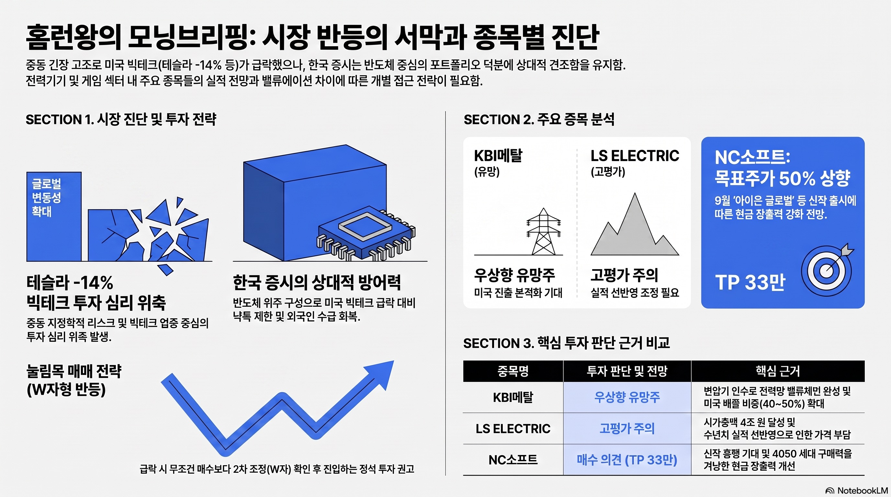

슈퍼개미 이세무사TVMORNING DIGEST · 2026-07-26 · 슈퍼개미 이세무사TV🎬 영상
홈런왕의 모닝브리핑 — 반등의 서막인가? (KBI메탈·LS ELECTRIC·NC)

01핵심 개요
항목
내용
채널
슈퍼개미 이세무사TV
제목
[LIVE] 홈런왕의 모닝브리핑 - 반등의 서막인가?, 오늘의 보고서 - KBI메탈 LS ELECTRIC NC
길이
약 20분(라이브 방송 리플레이)
핵심결론 1
중동(이란) 긴장 고조로 미국 증시가 흔들렸지만(테슬라 -14%), 한국 증시는 반도체 위주 구성 덕에 상대적으로 견조하며 반등 분위기가 이어지고 있다고 진단
핵심결론 2
KBI메탈은 변압기 인수로 전력기기 소재 밸류체인을 완성해 미국 진출이 본격화될 유망주로, LS ELECTRIC은 이미 수년치 실적이 선반영된 고평가 구간으로 각각 소개
핵심결론 3
NC소프트는 신한투자증권이 목표주가를 기존 대비 약 50% 상향(약 33만 원)하며 매수 의견을 제시, 9월 신작 출시에 따른 현금창출 기대가 근거로 제시
02핵심 내용 구조
1) 중동 정세와 글로벌 증시 충격
진행자(홈런왕)는 중동에서 전쟁 분위기가 급격히 고조되며 투자심리가 식었다고 전합니다. 도널드 트럼프 대통령이 향후 발생할 선박 손실을 동결 자금으로 배상하겠다고 언급했고, 이를 두고 이란의 대규모 공격 결정이 임박했다는 해석이 나온다고 소개합니다.
이 여파로 미국 증시에서 테슬라가 14% 급락했다고 언급되는데, 스페이스X와의 합병설이 배경으로 거론됩니다. 소비재·서비스 업종도 전반적으로 하락했다고 전합니다.
다만 엔비디아는 상대적으로 버텼다고 소개되는데, 중동 위기가 반도체 산업에는 크게 영향을 미치지 않을 것이라는 시장 해석이 있다고 설명합니다.
2) 한국 증시는 왜 다르게 반응하나
진행자는 통상 미국장이 크게 빠지면 한국장도 동반 하락하는 게 일반적이지만, 이번엔 한국장에 반등 분위기가 있어 선뜻 하락을 단정하기 어렵다고 진단합니다.
근거로 한국 증시가 반도체 위주로 구성돼 있는 반면, 이번 낙폭이 컸던 곳은 애플·구글·마이크로소프트·메타·아마존·테슬라 등 빅테크 업종이었다는 점을 듭니다. 한국은 반도체 낙폭이 상대적으로 크지 않았다고 언급합니다.
외국인 자금이 돌아오고 있는 흐름도 함께 언급하며, 만약 오늘 폭락이 나오더라도 오히려 매수 기회가 될 가능성이 높다는 견해를 제시합니다(원문 톤: "매수 타이밍을 한번 보는 게 좋지 않을까 싶다"는 조건부 의견으로 소개됨).
3) 환율·통화정책 배경
달러가 우하향 기조를 이어가는 가운데, 한국은 반도체 호조 덕에 금리를 올릴 여력이 있다고 언급되며, 미국과 한국의 매파적(긴축적) 발언이 시장에 주는 충격 크기는 다를 것이라는 해석이 제시됩니다.
원/엔 환율에 대해서도 "심하다"는 표현과 함께, 과거 대비 한일 산업 경쟁력 구도가 역전된 데 대한 소회를 짧게 언급합니다(격세지감이라는 표현 사용).
유가 상승과 관련해 전쟁 이슈에 민감하게 반응하는 정유·해운주가 강세를 보일 수 있다고 소개하되, 이런 종목군은 "투자보다 투기 영역"이라 방향을 예단하기 어렵다는 신중한 입장을 덧붙입니다.
4) 눌림목 매매와 투자·투기의 경계 — 진행자의 매매 철학
진행자는 코스피가 오늘 만약 6,500 부근까지 밀린다면 "무조건 매수 타임"이라는 견해를 제시하며, 오늘 변동성이 클 것으로 전망합니다.
SK이터닉스를 예로 들며 신재생에너지 대장주 성격에 SK그룹의 선택과 집중 대상이라 나쁘게 볼 종목은 아니라고 소개하고, 차트상 전고점을 뚫는 양봉이 나온 점을 짚습니다. 다만 첫 조정(눌림목) 구간에서 매수하는 것은 "거의 신의 영역"이라며 정석은 눌림목이 W자 형태로 나올 때 매수하는 방식이라고 설명합니다.
"투자와 투기는 한 끗 차이"라는 진행자의 관점이 소개됩니다. 기업의 성장 가능성을 보고 돈을 넣는 것이 투자, 오로지 가격 차익만 보는 것이 투기이지만, 시장은 투자자와 투기자를 가리지 않고 익절하는 사람이 승자가 되는 구조라는 설명입니다.
SK텔레콤에 대해서는 실적이 탄탄하고 올해 이미 큰 폭(약 2배, 최고점 대비로는 3배 근접)으로 상승했다고 소개하며, 최근 조정은 "건전한 조정"으로 보고 장단기 이평선이 수렴하는 구간에서 다음 상승이 나올 수 있다는 관점을 전합니다.
5) 오늘의 보고서 ① — KBI메탈
진행자는 과거 전력기기 종목들이 급등하던 시기에 KBI메탈을 "이등주"로 미리 언급했었다고 회상하며, 당시엔 변압기 인수 이슈로 주가가 급등했다고 전합니다.
이번에 소개된 증권사 보고서는 변압기 인수로 KBI메탈이 종합 전력기 소재 포트폴리오를 갖춘 기업으로 거듭났으며, 전력망 밸류체인이 완성되어 미국 진출이 본격화될 것이라는 관점을 제시한다고 소개합니다.
전선 부문 자회사인 KBI코스모링크는 연매출 약 2천억 원 수준의 고압·통신선 전문 제조사로, 미국 매출 비중이 40~50% 수준이라고 전합니다. 2026년 매출은 약 9,850억 원, 영업이익은 약 227억 원으로 예상된다고 소개하며, 전환사채 이슈도 이미 해소됐다고 언급합니다.
다만 진행자는 KBI메탈이 방향성을 예단하기 어려운 종목이라 목표 주가를 명확히 제시하기 힘들다고 전제하면서도, 전력기기 업황이 다시 살아나면 우상향할 수 있는 유망주로 관심 종목에 둘 만하다는 의견을 제시합니다.
6) 오늘의 보고서 ② — LS ELECTRIC
LS ELECTRIC은 KBI메탈과 대조적으로 "이미 업사이클이 끝난" 종목으로 소개됩니다. 보고서에서도 현재 주가가 비싼 편이라고 인정하면서, 이를 "성장이 길어지는 구간의 프리미엄"으로 설명한다고 전합니다.
2023년부터 꾸준히 상승했고 올해 들어 변동성이 커지며 큰 폭으로 추가 상승했다고 소개되며, 현재 시가총액이 약 4조 원 수준이라 앞으로 역대급 실적이 나오더라도 이미 수년치 실적이 선반영된 상태라고 진단합니다.
목표주가는 25만 원으로 제시되는데, 진행자는 한때 주가가 34만 원까지 갔던 걸 감안하면 이 목표주가도 증권사 입장에서는 이미 높은 편이라고 짚습니다. 전력기기 산업은 "굴뚝 산업" 특성상 생산능력(케파)을 단기간에 늘리기 어려워 당분간 완만한 우상향과 실적 개선이 이어질 것으로 정리합니다.
진행자 개인 의견으로는, 지금 당장의 매수보다는 향후 주가가 더 조정받아 시장 관심이 식었을 때 진입하는 것도 한 방법이라는 관점을 제시합니다(인용 톤).
7) 오늘의 보고서 ③ — NC소프트
NC소프트는 평소 증권사 보고서가 잘 나오지 않는 종목인데, 이번에 신한투자증권이 매수 의견과 함께 목표주가를 기존 대비 약 50% 상향한 약 33만 원으로 제시했다고 소개합니다.
근거로는 기존 신작들의 효과가 이어지는 가운데, 8~9월 신작 출시와 특히 9월 '아이온 글로벌' 출시로 현금창출력이 크게 개선될 것이라는 전망이 제시된다고 전합니다.
다만 진행자는 흥행 여부가 결국 "40~50대 지갑"에 달려 있다는 견해를 덧붙입니다. 10~30대는 NC 게임을 잘 하지 않지만 구매력이 상대적으로 낮고, 40대 이상은 게임을 덜 하지만 구매력이 있다는 딜레마를 지적하며, 이번 신작도 4050 세대를 겨냥할 가능성이 있다고 추정합니다.
NC소프트 주가는 최근 1년간 약 2배 성장했다고 전하며, 진행자는 이를 근거로 "NC를 아무리 비판하더라도 성장하고 있다는 사실은 변하지 않는다"는 관점을 제시합니다.
8) 게임주 투자 접근법 — 진행자의 방법론
진행자는 게임주는 섹터 전체가 함께 움직이는 경우가 드물다며, 개별 종목 단위로 접근할 것을 권합니다(원문 톤: "개별 종목으로 보시는 게 좋지 않을까 생각합니다").
비유로 제약·바이오 섹터를 듭니다. 제약·바이오도 특정 이슈에서 일부 종목만 급등락하듯, 게임주도 신작·현금창출력 등 개별 이슈에 따라 종목별로 다르게 움직이는 성격이 강하다는 설명입니다.
03기술적 맥락
전력기기 업황: 변압기·전선 등 전력망 관련 설비 수요가 AI 데이터센터 확산과 노후 전력망 교체 수요로 최근 수년간 급증했던 배경이 있으며, 이번 방송에서도 KBI메탈·LS ELECTRIC 모두 이 업황을 기준으로 평가되고 있습니다.
눌림목 매매: 상승 추세 중 일시적으로 조정(하락)이 나온 구간을 뜻하며, 진행자는 이 타이밍을 잡는 것이 "감각적인 부분"이라 어렵다고 여러 차례 강조합니다.
이평선(이동평균선) 수렴: 장기·단기 이동평균선이 한 지점으로 모이는 구간을 뜻하며, 진행자는 이 구간 이후 주가가 크게 움직이는(폭발하는) 경향이 있다고 소개합니다.
04전략적 의미
진행자의 관점은 "지수 방향성 예단보다 업종·종목별 개별 접근"에 무게가 실려 있습니다. 미국발 충격에도 한국 반도체 구성 비중이 상대적 방어력이 될 수 있다는 시각은, 투자자가 지수 전체보다 업종 구성을 먼저 살펴야 한다는 시사점으로 해석됩니다.
같은 전력기기 섹터 내에서도 KBI메탈(유망주·저평가 논쟁 여지)과 LS ELECTRIC(이미 선반영된 고평가 논쟁 여지)을 대조적으로 짚은 점은, 업종 테마에 올라타더라도 개별 종목의 밸류에이션 단계를 구분해야 한다는 메시지로 읽힙니다.
NC소프트 사례처럼 증권사 목표주가 상향이 나오더라도 그 근거(신작 흥행 성패, 특정 연령대 소비력)를 함께 따져야 한다는 접근은, 보고서 수치만이 아니라 이면의 가정을 점검하라는 시사점을 줍니다.
05활용 시나리오
전력기기 테마에 관심 있는 투자자가 KBI메탈과 LS ELECTRIC의 밸류에이션 단계 차이(유망주 vs 선반영 고점권)를 비교해 포트폴리오 비중을 조정할 때 참고할 수 있습니다.
게임주(NC소프트 등)에 관심 있는 투자자가 목표주가 상향의 근거(신작 일정, 소비층 특성)를 확인하고 개별 종목 단위로 투자 여부를 판단할 때 활용할 수 있습니다.
중동發 지정학 리스크로 시장이 흔들릴 때, 지수 전체보다 업종 구성(반도체 비중 등)을 따져 매수·관망 타이밍을 고민하는 투자자에게 참고 프레임이 될 수 있습니다.
눌림목 매매나 이평선 수렴 같은 기술적 매매 개념을 처음 접하는 초보 투자자가 실전 사례로 개념을 익히는 학습 자료로 활용할 수 있습니다.
06현황 및 전망
방송 시점(2026년 7월 24일) 기준으로 중동 정세는 유동적이며, 진행자도 "오늘은 변동성이 심할 것"이라 전망하되 다음 주에 대해서는 "나쁘지 않을 것 같다"는 조건부 낙관을 제시합니다.
진행자는 전쟁 이슈가 있더라도 한국과의 지리적 거리를 고려하면, 오늘의 하락이 오히려 다음 주 반등의 매수 시점이 될 수 있다는 가능성을 열어둡니다. 다만 이는 "확실한 논리가 생긴다면"이라는 전제가 붙은 조건부 견해로 소개됩니다.
KBI메탈·LS ELECTRIC은 전력기기 업황 회복 여부, NC소프트는 9월 신작(아이온 글로벌 등) 흥행 여부가 각각 향후 주가 흐름을 가늠할 핵심 변수로 제시됩니다.